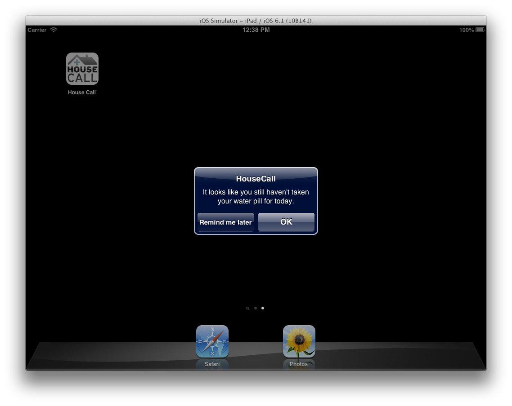

Our design is centered around the triad relationship between weight, diet, and medication.
After going through multiple iterations, our final design consists of a simple Home screen and a daily check-in process, followed by an educational quiz and summary report.
This example on the "check swelling" screen illustrates how our design has changed from low fidelity prototype to high fidelity prototype. Can you spot which interactions are different?

We found in our interviews that if people use HouseCall, they would want to make full use of the tablet as well. When asked whether she would participate in a program like this, one interviewee said that she would if she gets to keep the tablet and play with it. One patient in his thirties already owns a smartphone, while another older patient loves to browse his family photos and play games on his iPad. We believe that, instead of restricting the use of a fully functional tablet to just the application, providers should encourage the patients to explore and achieve more on the tablet. The more engaged the user is with this technology, the user is more likely to be comfortable using HouseCall.
For this reason we designed alerts that take place outside of the application as nudges to behavioral change. For example, if Gertrude, our main persona, forgot to the take the diuretics but is playing with the tablet at home, she can be reminded of her missing medication.
The other example is a nudge to let the patients go exercise. Our research shows that although light exercises can be beneficial to HF patients, exercising can also be hard for them; even those who are physically capable don't get enough exercises. In our design, the app knows the city Gertrude is in and the current weather. The patch also sends Gertrude’s activity levels to the tablet, which will then recommend Gertrude to go for a walk when it is nice outside and she has been sedentary for a while.
These alerts will not show in your browser because they call native functions of the tablet OS.